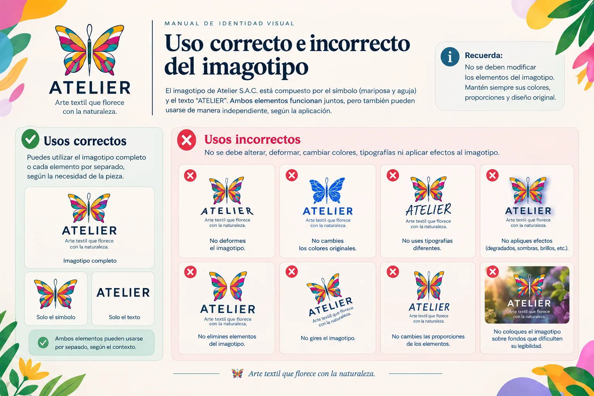
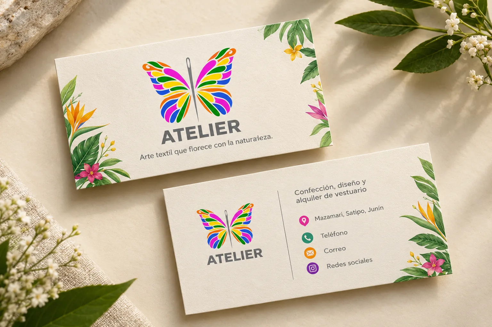
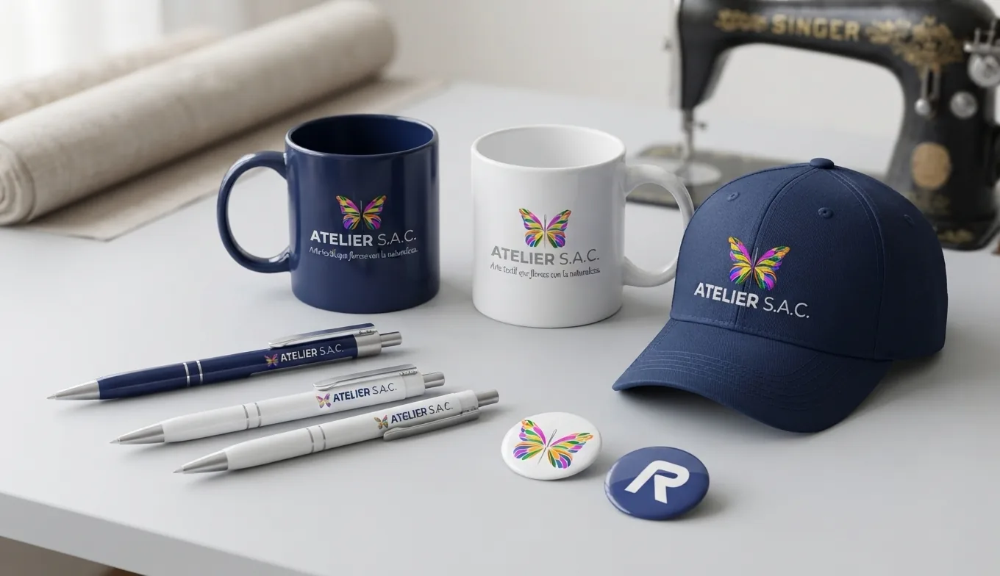
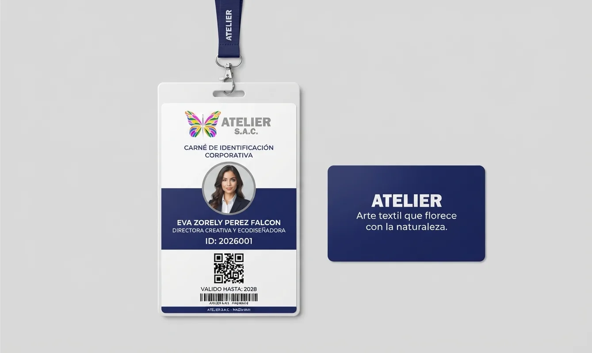
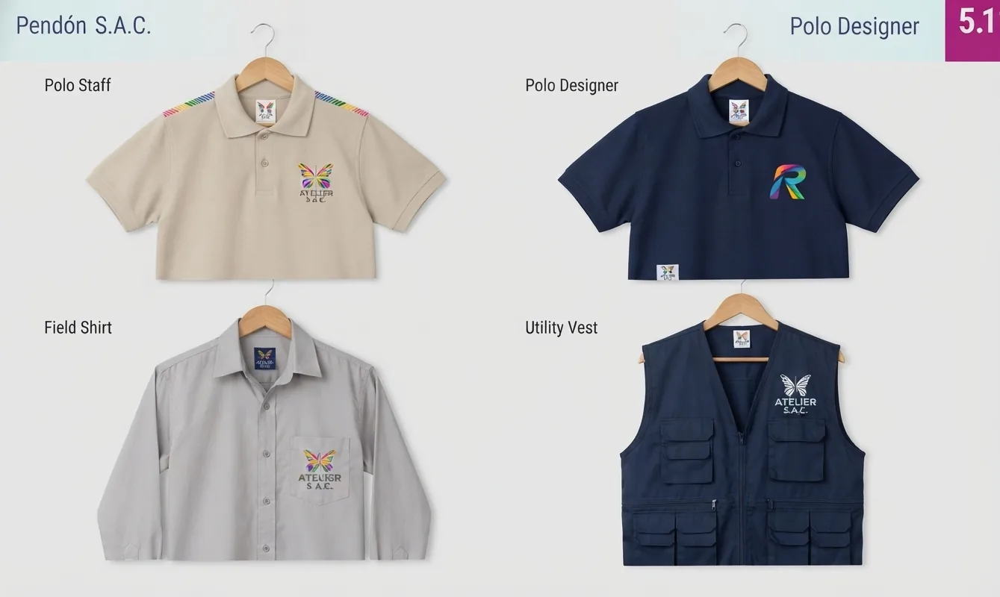
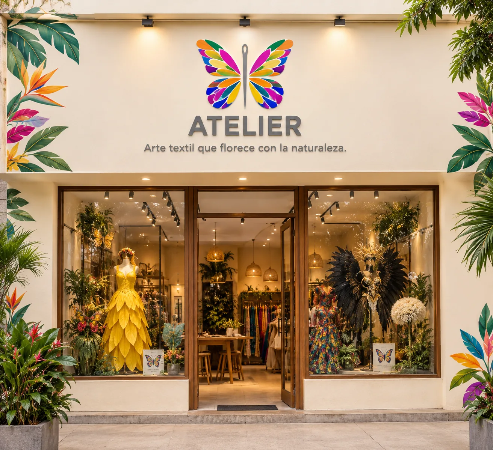

Manual de identidad corporativa de Atelier S.A.C.
Directrices para usar bien el logotipo, el color, la tipografía y las aplicaciones de la marca.

Ecodiseño silvestre y arte textil
Este manual reúne las directrices para usar bien la identidad visual de Atelier S.A.C. La marca nace del ecodiseño silvestre y el arte textil: une la elegancia de la alta costura con la naturalidad y los colores vibrantes de la biodiversidad, representada en la mariposa y en la aguja de coser. Mantener una imagen coherente garantiza reconocimiento, prestigio y solidez.
Un símbolo, un nombre y una promesa
Una mariposa de formas orgánicas y multicolor, atravesada por una aguja de coser estilizada: precisión y arte textil.
El nombre ATELIER S.A.C. en tipografía sólida, con el eslogan institucional.
Proporciones geométricas fijas. No se altera la distancia, escala ni posición entre símbolo y texto.
Equivale a la altura de la letra A mayúscula, alrededor de todo el conjunto. Ningún elemento puede invadirla.
Fuerza para los títulos, caligrafía para los detalles
En la web se usan equivalentes abiertos de las fuentes del manual.
Azul marino, multicolor y neutros
Toca un color para copiar su código HEX.
Institucionales
El azul marino transmite profesionalismo, elegancia y seriedad.
La gama multicolor de la mariposa refleja la vitalidad de la naturaleza y la creatividad textil.
Secundarios
El gris equilibra la paleta en soportes secundarios; el beige se usa en aplicaciones especiales de staff y línea de campo.
Líneas bicolor (azul marino + verde lima) y eco-line (oliva, marrón y crema).
Sobre blanco o fondos claros: imagotipo multicolor y tipografía en azul oscuro.
Sobre azul marino o negro: imagotipo y tipografía en blanco o plata.
Escala de grises y una tinta: en soportes limitados (facturas, sellos) se usa negro sobre blanco o blanco sobre fondo oscuro. Más versiones en Identidad visual.
Usos correctos e incorrectos
Aplicar sobre blanco, azul institucional o gris neutro.
Reproducir en proporción y respetar el área de protección.
No cambiar los colores del imagotipo multicolor.
No estirar, inclinar ni deformar el logotipo.
No ponerlo sobre fotos complejas sin un contenedor o plasta de contraste.
Tamaño mínimo
En impresos, el ancho mínimo es de 2,5 cm para que el eslogan y la aguja no pierdan definición. Prueba el límite:
Alas y costura como textura de marca
Líneas y trazos de costura para fondos institucionales y editoriales.
Del papel a la fachada
Desliza para ver las nueve aplicaciones del manual.






Antes de publicar o imprimir
Marca cada punto al revisar una pieza de comunicación.